The system we built that your clinic needed it.
Built by a working pediatric practice to handle check-in, growth charts, prescriptions, and vaccinations — now open to other clinics.
Priced for independent practices · Free record migration · Works through patchy clinic wifi
The slow parts of a pediatric day.
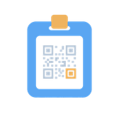
No double paperwork
New patients scan a QR code once, instead of filling the same form twice.
Growth, calculated instantly
WHO and IAP percentiles plot automatically and trend across every visit.
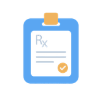
Prescriptions that arrive clearly
PDF prescriptions land on WhatsApp, no blurry photos or refill calls.
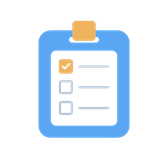
Vaccination status, tracked
The full IAP schedule, tracked per dose, not memory or a paper card.
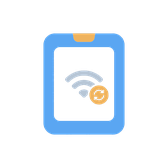
Works through patchy wifi
Charts are cached locally and sync the moment you're back online.
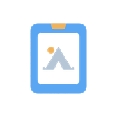
Built for Camp's too
A standalone mode for school screenings and vaccination camps.
Six steps, in the order they really happen.
This is the literal sequence a child moves through, not a features list rearranged to look like one.
QR check-in
A parent fills the intake form on their own phone before they reach the desk.
One-tap approval
Staff review the submission and approve it. The patient record is created automatically.
Vitals & growth
Weight, height, and head circumference are plotted live against WHO or IAP curves.
Prescribe
A searchable note builder with daily, interval, or meal-relative dosing fields.
Check vaccines
Due and overdue doses surface automatically against the IAP schedule.
Sent, not printed
The PDF prescription lands in the parent's WhatsApp before they leave the room.
Still doing this on paper and phone calls?
Book a walkthroughBuilt pediatric-first, not adapted from an adult chart.
Growth charts, two ways
WHO standards for under-5s and IAP standards for ages 5 to 18: height, weight, BMI, and head circumference, matched automatically by age and sex. Every chart renders instantly on screen, then again as a clinic-grade PDF.
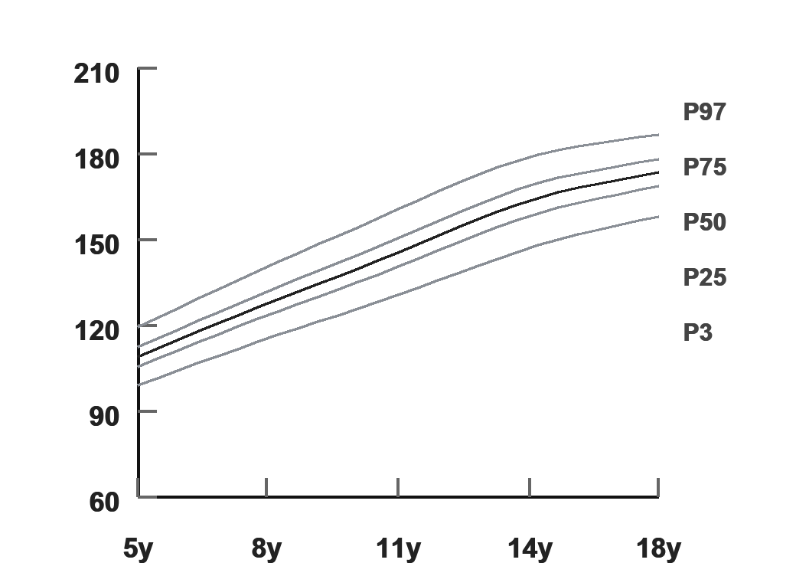
Vaccination schedule, tracked per dose
The full IAP immunization schedule from birth through 16–18 years, grouped into milestones with automatic due/overdue status, plus the brand and date for every dose actually given.
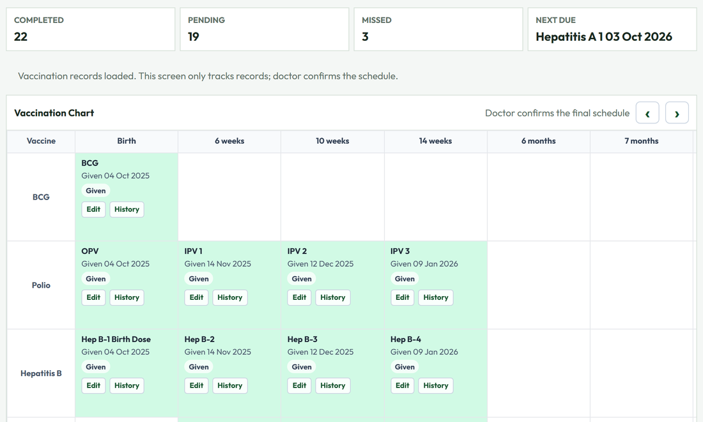
A prescription builder that learns the clinic
Symptoms, findings, diagnosis, medications, and instructions: each a searchable picker that ranks a doctor's own most-used items to the top, with saved templates for the visits that repeat every week.
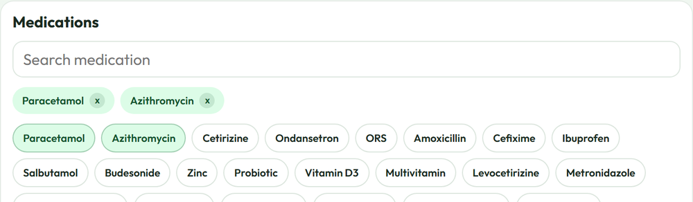
A screening mode for outside the clinic
Vaccination camps and school health checks don't need a full patient record, just vitals and a chart. This runs as its own standalone tool, saved locally and printed on the spot.
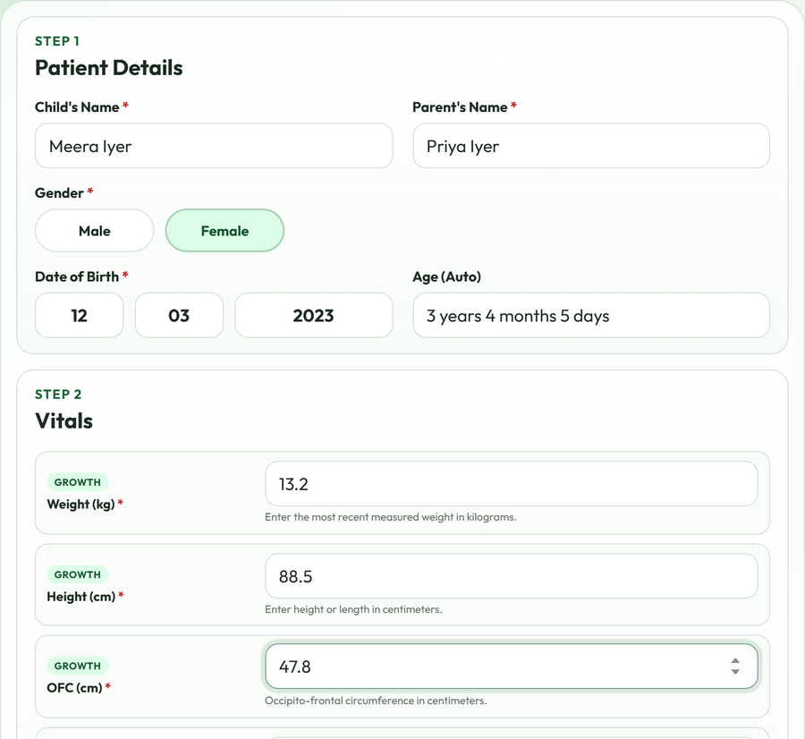
A parent portal that needs no app
Parents look up visit history with their child's patient ID and date of birth, in any mobile browser: every prescription and growth record they've been sent, in one place.
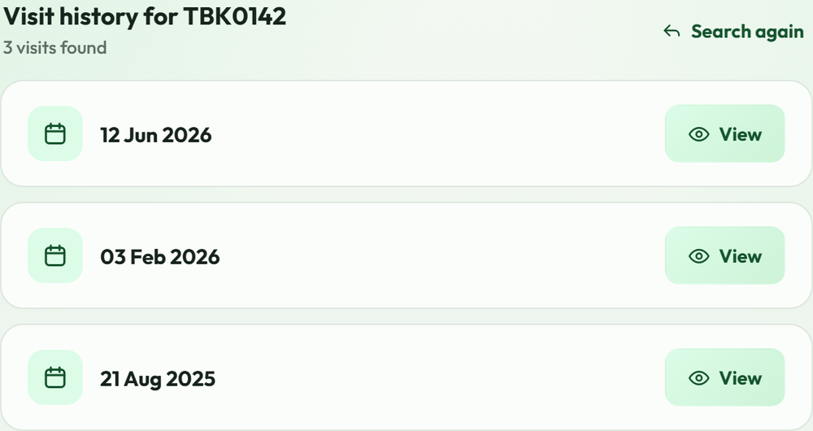
Certificates, filled in automatically
Fitness, leave, discharge, and COVID-19 templates, ready to go: pick one and the patient's name, age, and guardian fill in on their own. Print it, send it on WhatsApp, or save it to the record.
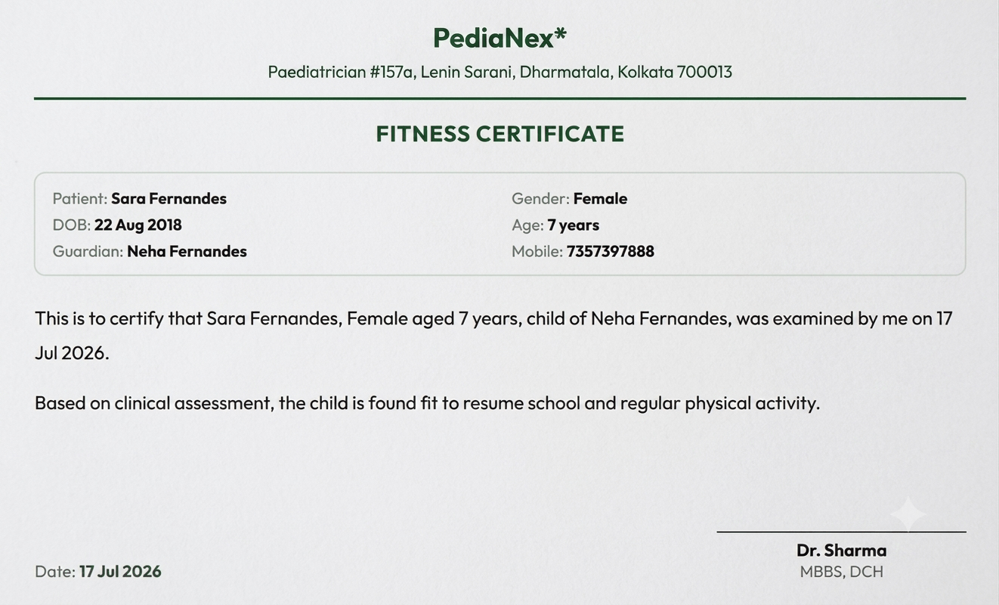
Reception desktop, doctor's tablet, or a phone on the go.
PediaNex installs as an app on any device: the same record, the same session, no separate install for each screen.
We didn't set out to build software.
We needed a way off paper charts and Excel vaccination trackers, so PediaNex is the tool our clinic runs on every single day, not a demo built to look good on a call.
What you've seen on this page (the check-in flow, the growth charts, the WhatsApp prescriptions) is the actual product a working pediatric practice depends on. We're opening it up to a small number of other clinics next.
"We're collecting Dr. Srinivas's actual words instead of writing something that sounds good. Check back soon."
Built in the open: here's what's still coming.
We'd rather tell you what isn't finished yet than let a features list imply otherwise.
In progress
Per-staff logins & roles
Separate accounts for doctors, reception, and admin, with a record of who did what.
Planned
Appointment scheduling
A real calendar and slot booking, beyond today's same-day queue.
Automatic recall reminders
WhatsApp nudges sent ahead of a due vaccine or missed follow-up, not just on request.
Billing & invoicing
Payment records tied to each visit.
Allergy & interaction checks
A flag in the prescription builder before a known allergy gets prescribed around.
Exploring
AI-assisted note drafting
A first-draft summary from the structured visit notes already being captured.
Questions clinic owners ask before switching.
How is patient data protected?
Every clinical page sits behind a signed session, and every record lives in access-controlled cloud storage. We're actively tightening this further as we move from a single-clinic tool to a multi-practice product. See the roadmap above for what's in progress.
Do I need special hardware?
No. PediaNex runs in any browser and installs as an app on phone, tablet, or desktop.
What if my clinic's internet is unreliable?
Recent charts and patient lookups are cached on the device, so you can keep working through a short outage. Everything syncs once you're back online.
Do parents need to download an app?
No. The parent portal works in any mobile browser.
Can you migrate our existing patient records?
Yes. This is exactly how our own historical records got into the system in the first place, so it's a proven path, not a first attempt.
How long does setup take?
It depends on how much existing data needs migrating. We'll give you a real estimate on the walkthrough call, not a number picked to sound good on a landing page.
What does it cost?
We're finalizing public pricing while we onboard the first practices, but the target is simple: less than what the established EMR vendors charge independent practices. Book a walkthrough and we'll quote a fair number for your practice size.
Can I see it before committing?
Yes. A live walkthrough on your own sample workflow is the first step, before any commitment.
See it running on your own patient workflow.
Twenty minutes on real sample data, not a script.
Book a walkthrough or chat with us on WhatsApp →